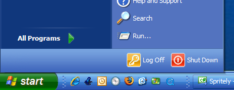
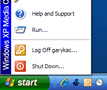
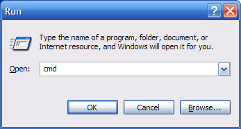
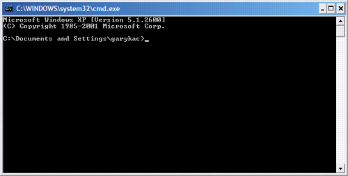
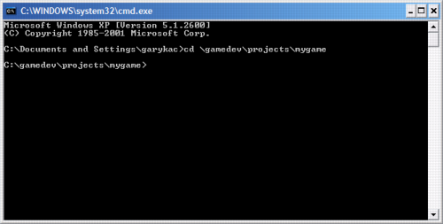
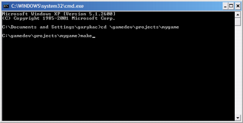
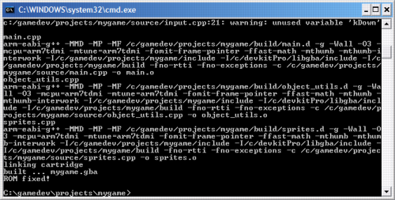
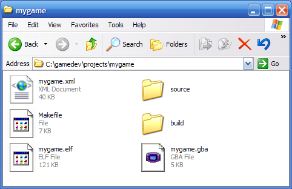

Building a GBA ROM File
After you've successfully exported your project in Spritely, you're now ready to build the GBA ROM file from the exported data. This tutorial will show you how to do that using the DOS command prompt.
You can also build/run your project from within Programmer's Notepad. See Using Programmer's Notepad for more information.
Step 1 : Launch a DOS command prompt
First, click on the "Start" menu in the lower left corner of your screen.
This will pull up a menu that should look something like one of the examples shown here.

or

Find the "Run..." command near the bottom of this menu and click on it.
This will bring up the "Run" dialog.

Enter cmd into the edit field and press the "OK" button.
This will bring up a "Command Prompt" that will allow you to enter the commands needed to build your GBA project.

Step 2 : Go to your project's directory
Unfortunately, it starts out in the wrong directory, so we'll need to go to the correct directory before we can build.
Use the cd ("change directory") command to go to your project's directory:
cd \gamedev\projects\mygame
Note the space between cd and \.
Also, you'll need to replace "mygame" with the name you chose earlier when exporting your project.
Make sure to press the "Enter" key after you type in the command.

Step 3 : Make your project
Once you're in the correct directory, type:
make
and press Enter.

You'll see a bunch of messages printed out in the Command Prompt window that you can ignore (for now).

The only important parts are the last 2 lines, which should say
built ... mygame.gba ROM fixed!
if the build was successful.
Finished!
If you open your project directory, you'll see the new files that were created.

build/ — This directory contains temporary files that the compiler used when building the ROM file.
mygame.elf — This is another temporary file.
mygame.gba — This is the ROM file that contains your game!
You're now ready to run your ROM and see how your sprite looks.